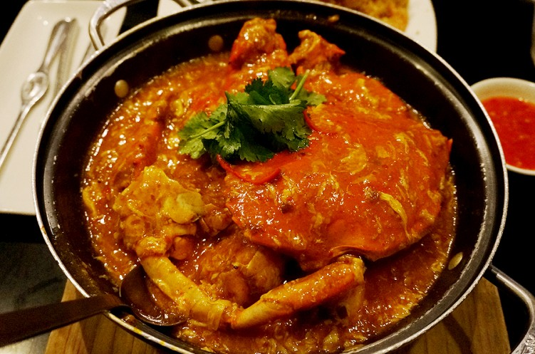

칠리크랩
칠리크랩은 볶은 게에 칠리소스와 토마토소스로 맛을 낸 싱가포르 요리이다.
1950년대 중반 한 부부의 시도로 토마토소스를 넣어 만든 게 요리에 칠리소스를 추가한 것이 칠리크랩의 원형이 된 것으로 알려져 있다.
이후 달걀 등 다른 재료가 더해지며 오늘날의 모습을 갖추었다.
부드러운 게살과 짭짤한 맛, 달콤한 맛, 짭짤한 맛이 어우러진 소스가 특징이며, 주로 빵과 함께 먹는다
[네이버 지식백과] 칠리크랩 [chili crab] (세계 음식명 백과, 신중원)/

칠리크랩의 종류
메뉴를 눌러보세요:)
칠리크랩
칠리 크랩은 싱가포르의 매운 게요리이다. 연갑게를 토마토 칠리 소스의 걸쭉한 양념과 함께 볶아 내고 향초를 곁들여 먹는다.
말레이시아 전통음식과 중국 음식의 특성이 혼합된 싱가포르 문화의 특성을 잘나타내주고 있다
페퍼 크랩
중국, 인도 등의 영향을 받아 섞인 독특한 음식 문화를 가지고 있다. 칠리 크랩: 매운 토마토 소스의 게 요리. 블랙페퍼 크랩: 칠리 크랩과 함께 유명한 후추 소스로 만든 게 요리. 블랙소스 프론: 검은 두반장 소스의 대하 요리. 삼발 머슬: 삼발소스를 얹어 쪄낸 홍합
페퍼크랩은 싱가포르에서 칠리크랩의 사촌 격으로 언급되는 또 다른 게 요리이다.
칠리소스로 매콤한 맛을 낸 칠리크랩과 달리 페퍼크랩은 페퍼, 즉 후추로 매운맛을 낸다.
칠리크랩은 매콤하고 달콤한 맛을 내는 데 비해 페퍼크랩은 매운맛이 두드러진다.
또한 걸쭉한 소스가 접시에 가득 담겨 나오는 칠리크랩과 달리 페퍼크랩은 후추로 만든 물기 없는 소스가 게를 덮을 정도로만 나온다는 것도 차이점이다.
[네이버 지식백과] 칠리크랩 [chili crab] (세계 음식명 백과, 신중원)

내가 가본 jumboseafood 음식점:)
여행의 즐거움은 새로운 것을 보고 느끼는 것이다! 특히 여행지에서 먹는 즐거움은 행복 그 자체이다.
물론 입맛에 맞을 경우에만! 향신료가 강한 동남아 여행에서는 입에 맞는 음식 찾는 것이 쉽지는 않을 수도 있다.
수많은 여행 중 한 번도 음식으로 고생해본 적 없던 필자는 싱가폴 여행을 가기로 결정했을 때에도 걱정하지 않았다. 오히려 먹고 싶은 것이 너무 많아서 탈이었다고 할까.https://www.jumboseafood.com.sg/en/home
홈페이지에서 하단에 있는 ONLINE RESERVATION 을 클릭하고 방문할 지점, 이름, 이메일 주소, 전화번호, 인원, 날짜, 시간을 기입한다.
| 오픈 시간 | 월-일 12-3pm / 6pm-12am |
| 가는 방법 | MRT 보라색 NE 라인 클락 키 역 하차 후 도보 10분 |
| 주소 | 30 Merchant Road Riverside Point, Singapore (058282) |
| 가격 | 800g 기준 SGD 74 |
예약이 불가능하거나 예약이 확정되면 기입한 이메일로 확정 메일이 전달된다.
점보 레스토랑은 이스트코스트, 리버사이드 포인트, 리버 워크, 뎀시 힐, 내셔널 서비스 리조트 앤 컨트리클럽 총 5개의 지점이 있는데 오늘 소개할 지점은 클락 키에 있는 리버사이드 점이다.
유유히 흐르는 강을 바라보며 싱가폴 현지의 느낌을 가득 느낄 수 있는 야외 뷰 덕분에 가장 많은 이들에게 사랑 받는 지점이기도 하다.
점보 레스토랑 앞으로 흐르는 강과 알록달록 아기자기한 건물들 덕분이기도 하고 밤이 되면 달과
조명에 비치는 강의 반짝임으로 분위기가 한껏 달라올라 호텔 디너를 먹는 것 부럽지 않은 식사를 할 수 있기 때문에 남녀노소를 불문하고 모든 이들이 이 지점을 즐겨 찾는다.
진정한 미식가는 눈으로 주변 경치 한번, 코로 음식의 향을 한번, 입으로 음식의 맛을 한번 총 세 번 먹는다고 했다.
눈으로 경치를 즐길 수 있는 테라스 좌석을 원하면 사전예약 시 요청해야만 앉을 수 있으니 이 점 유의하자.
점보 레스토랑 안은 굉장히 번잡스럽고 시끄럽다.